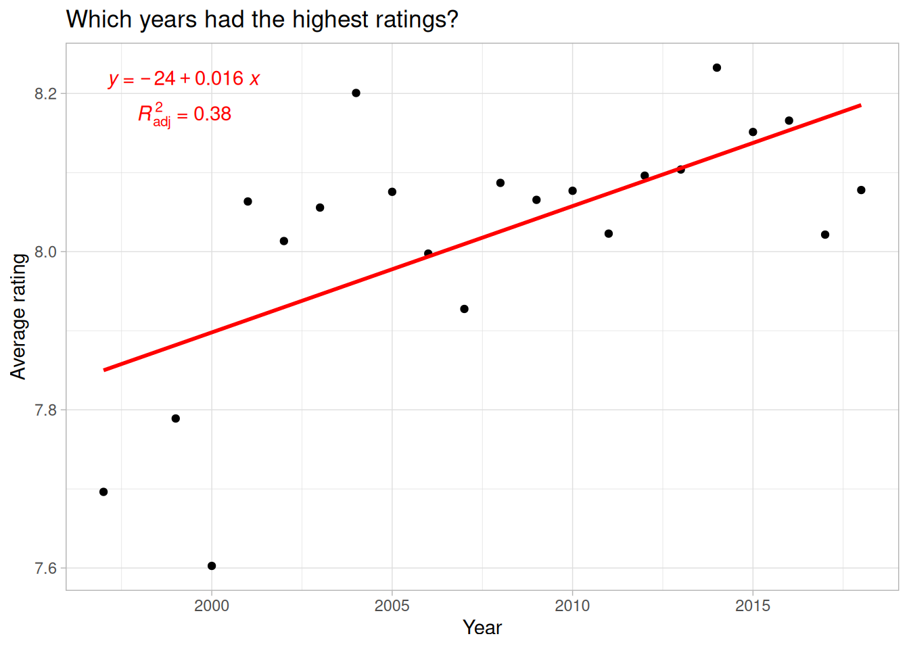
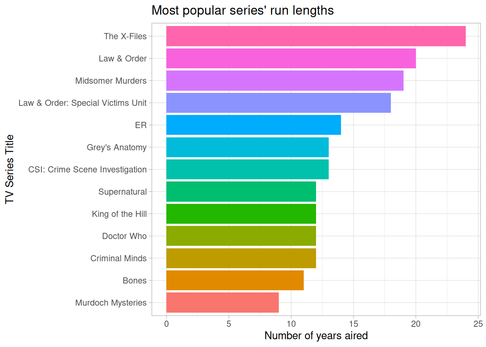
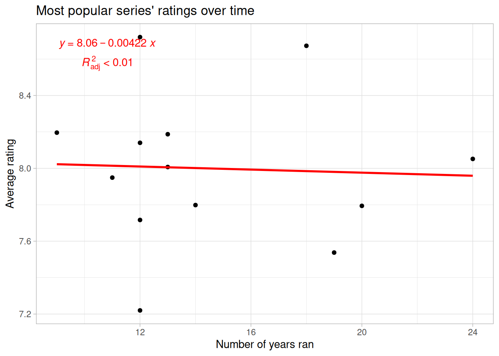
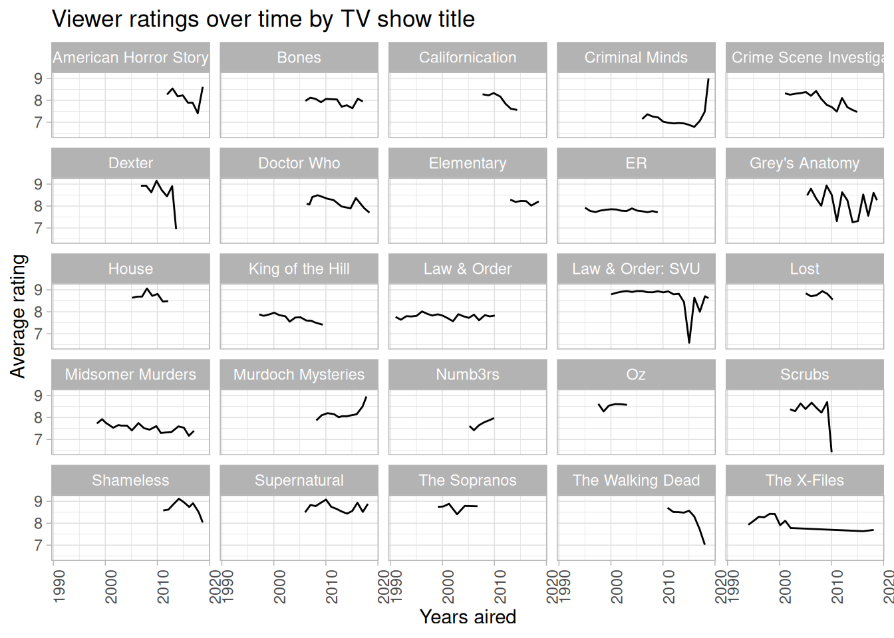

First TidyTuesday submission
A walkthrough of my first #TidyTuesday contribution.
It’s been quite some time since I’ve written here, so I thought I would use one my of 2019 #rstats goals as an excuse to brush off the dust.
In this post, I write about my first #tidytuesday submission of the Economist’s “TV’s golden age is real” data set (original #tidytuesday code here). I also make a few improvements to some of the graphs and add tables with the gt package.
Special thanks to Isabella Ghement for providing a few tips on how to improve the original graphs!
First, load the required packages and data:
Which years had the highest ratings?
Code
tv_rating %>%
mutate(year = year(date)) %>%
group_by(year) %>%
summarize(
n = n(),
avg_rating = mean(av_rating)
) %>%
filter(n > 25) %>%
arrange(desc(avg_rating)) %>%
ggplot() +
aes(year, avg_rating) +
geom_point() +
geom_smooth(
formula = y ~ x,
method = "lm",
se = FALSE,
color = "red"
) +
labs(
title = "Which years had the highest ratings?",
x = "Year",
y = "Average rating"
) +
stat_poly_eq(aes(label = paste("atop(", ..eq.label.., ",", ..adj.rr.label.., ")")),
formula = y ~ x, color = "red", parse = TRUE
) +
theme_light()
Looks like the newer the TV drama, the more likely it was to have a higher rating. Maybe some of this is variance is due to shows with multiple seasons. Let’s see how this changes when looking at individual shows and their respective run lengths.
Which titles had the highest ratings, and how long did they run?
Code
titles <- tv_rating %>%
group_by(title) %>%
summarize(
n = n(),
first_yr = min(year(date)),
last_yr = max(year(date)),
num_seasons = max(seasonNumber),
yrs_aired = (max(year(date) - min(year(date)))),
avg_rating = mean(av_rating)
) %>%
filter(n > 10) %>% # not enough cases to filter by 25 ratings per title
arrange(desc(avg_rating))
# highest rated titles' run lengths
titles %>%
mutate(title = fct_reorder(title, yrs_aired)) %>%
ggplot() +
aes(title, yrs_aired, fill = title) +
geom_col() +
coord_flip() +
labs(
title = "Most popular series' run lengths",
x = "TV Series Title",
y = "Number of years aired"
) +
theme_light() +
theme(legend.position = "none")
Code
# highest rated titles rating over time
titles %>%
ggplot() +
aes(yrs_aired, avg_rating) +
geom_point() +
geom_smooth(
formula = y ~ x,
method = "lm",
se = FALSE,
color = "red"
) +
labs(
title = "Most popular series' ratings over time",
x = "Number of years ran",
y = "Average rating"
) +
stat_poly_eq(aes(label = paste("atop(", ..eq.label.., ",", ..adj.rr.label.., ")")),
formula = y ~ x, color = "red", parse = TRUE
) +
theme_light()
I haven’t seen all of these shows, but for the most part, their titles seem to describe suspenseful dramas (e.g., mystery, crime, maybe even thriller/horror). However, King of the Hill doesn’t really fit this description, so let’s take a look at the genre variable. Keeping in mind that all of these shows are dramas, I’m conceptualizing these as sub-genres of drama.
Which sub-genres are most popular?
Code
top_ratings <- function(df, x) {
df %>%
summarize(
n = n(),
avg_rating = mean(av_rating),
med_rating = median(av_rating)
) %>%
filter(n > 25) %>%
arrange(desc(med_rating))
}
tv_rating %>%
group_by(genres) %>%
top_ratings() %>%
mutate(genres = str_replace_all(genres, ",", ", ")) %>%
gt() %>%
tab_header(title = "Which drama sub-genres are most popular?") %>%
fmt_number(
columns = vars(avg_rating, med_rating),
decimals = 3
) %>%
cols_label(
genres = "Sub-genres",
n = "Number of responses",
avg_rating = "Average rating",
med_rating = "Median rating"
)| Which drama sub-genres are most popular? | |||
|---|---|---|---|
| Sub-genres | Number of responses | Average rating | Median rating |
| Drama, Fantasy, Horror | 56 | 8.341 | 8.505 |
| Crime, Drama, Thriller | 63 | 8.390 | 8.409 |
| Action, Crime, Drama | 146 | 8.156 | 8.282 |
| Crime, Drama | 107 | 8.267 | 8.268 |
| Drama, Thriller | 27 | 8.028 | 8.192 |
| Drama, Fantasy, Mystery | 32 | 8.143 | 8.162 |
| Drama | 168 | 8.001 | 8.160 |
| Adventure, Drama, Fantasy | 27 | 8.107 | 8.145 |
| Drama, Mystery, Sci-Fi | 58 | 8.061 | 8.113 |
| Comedy, Drama, Family | 43 | 8.008 | 8.110 |
| Comedy, Crime, Drama | 80 | 8.022 | 8.094 |
| Comedy, Drama | 174 | 8.021 | 8.087 |
| Crime, Drama, Mystery | 369 | 7.991 | 8.049 |
| Action, Adventure, Drama | 112 | 8.020 | 7.975 |
| Comedy, Drama, Romance | 76 | 7.973 | 7.962 |
| Action, Drama, Sci-Fi | 28 | 8.046 | 7.943 |
| Animation, Comedy, Drama | 28 | 8.040 | 7.918 |
| Drama, Romance | 86 | 7.834 | 7.876 |
These results provide some evidence of my initial impression: People tend to give higher ratings to suspenseful-like dramas (e.g., crime, thriller, horror, mystery, action). But, there’s not much variability between the values. This might be because many of the values in ‘genres’ are grouped together. Combining genres like this could hide underlying patterns among the sub-genres, so let’s split the genres variable up such that each sub-genre has its own row.
After splitting up ‘genres’, which sub-genres are most popular?
Code
genre_split %>%
group_by(genres) %>%
top_ratings() %>%
gt() %>%
tab_header(title = "Which sub-genres are most popular?") %>%
fmt_number(
columns = vars(avg_rating, med_rating),
decimals = 3
) %>%
cols_label(
genres = "Sub-genres",
n = "Number of responses",
avg_rating = "Average rating",
med_rating = "Median rating"
)| Which sub-genres are most popular? | |||
|---|---|---|---|
| Sub-genres | Number of responses | Average rating | Median rating |
| Sport | 29 | 8.339 | 8.381 |
| History | 62 | 8.274 | 8.343 |
| Music | 32 | 8.186 | 8.291 |
| Thriller | 160 | 8.169 | 8.256 |
| Fantasy | 223 | 8.197 | 8.212 |
| Horror | 124 | 8.093 | 8.211 |
| Family | 76 | 8.063 | 8.179 |
| Crime | 822 | 8.101 | 8.144 |
| Drama | 2266 | 8.061 | 8.115 |
| Mystery | 558 | 8.020 | 8.099 |
| Action | 387 | 8.085 | 8.099 |
| Comedy | 516 | 8.040 | 8.074 |
| Biography | 29 | 8.111 | 8.072 |
| Adventure | 204 | 8.024 | 8.033 |
| Romance | 235 | 7.976 | 7.997 |
| Sci-Fi | 154 | 7.925 | 7.927 |
| Animation | 36 | 8.002 | 7.891 |
Still, very little variability between sub-genres. The overall difference between the the highest (‘Sport’) and lowest (‘Animation’) rating is around 0.49. Nevertheless, these results paint a different picture than when all of the sub-genres were grouped together.
Now, it looks like sports, history, and music are the highest rated sub-genres, and not the suspenseful ones (i.e., crime, thriller, and horror) we saw earlier. To be fair, these new sub-genres could very well be suspenseful, but they seem to be of a slightly different “theme” than the former ones.
This raises a good point: Within the dramas, there are different types, and these types could be valued for different reasons. For example, comedy dramas might be valued for certain positive connotations (e.g., laughter), whereas a crime drama might be valued for certain negative connotations (e.g., fear). So, perhaps there is a difference between comedies (defined as comedy and animation) and tragedies (defined as crime, horror, and thriller). Granted, these definitions could be debated/refined, but they should provide a rough snapshot of the idea.
Is there a difference in ratings between comedies and tragedies?
Code
genre_split %>%
mutate(
com_trag = case_when(
genres == "Comedy" |
genres == "Animation" ~ "comedy",
genres == "Crime" |
genres == "Horror" |
genres == "Thriller" ~ "tragedy"
)
) %>%
filter(!is.na(com_trag)) %>%
group_by(com_trag) %>%
top_ratings() %>%
mutate(com_trag = str_to_title(com_trag)) %>%
gt() %>%
tab_header(title = "Mean/median differences between comedies and tragedies") %>%
fmt_number(
columns = vars(avg_rating, med_rating),
decimals = 3
) %>%
cols_label(
com_trag = "Drama type",
n = "Number of responses",
avg_rating = "Average rating",
med_rating = "Median rating"
)| Mean/median differences between comedies and tragedies | |||
|---|---|---|---|
| Drama type | Number of responses | Average rating | Median rating |
| Tragedy | 1106 | 8.110 | 8.168 |
| Comedy | 552 | 8.038 | 8.071 |
So, there is a difference, people tend to rate tragedies higher than comedies, but in the grand scheme of things, this difference quite small. The average distance between comedies and tragedies is only 0.07, and the median difference is 0.1. Thus, it seems there’s not much difference in viewer ratings among sub-genres, at least not in our sample. But, this isn’t actually that surprising: Our sample was already narrowed down to TV drama titles. Since all of the titles share this common characteristic, what we’re probably seeing is the consistency of viewers to rate TV dramas in a similar fashion. In other words, people tend to rate all TV dramas similarly, regardless of the story line/sub-genre.
Since sub-genres didn’t bare much useful information, let’s take a look at the actual titles within the dataset. All of the top-rated shows aired for multiple seasons, but I doubt every show that aired multiple seasons was popular. In fact, some earlier analyses showed a decline in ratings over time. So, let’s see what the data say.
How do viewer ratings changes over time by TV show title
Code
# list most popular shows from earlier analysis (with extra picks of my own)
shows <- c("The X-Files", "Law & Order", "Midsomer Murders", "Law & Order: Special Victims Unit", "ER", "Grey's Anatomy", "CSI: Crime Scene Investigation", "Supernatural", "King of the Hill", "Doctor Who", "Criminal Minds", "Bones", "Murdoch Mysteries", "American Horror Story", "Are you Afraid of the Dark?", "Californication", "Elementary", "Lost", "Numb3rs", "Shameless", "The Walking Dead", "The Sopranos", "Scrubs", "Oz", "House", "Dexter")
tv_rating %>%
filter(title %in% shows) %>%
mutate(title = str_replace(title, "Special Victims Unit", "SVU")) %>%
group_by(title) %>%
ggplot() +
aes(date, av_rating) +
facet_wrap(~title) +
geom_line() +
labs(
title = "Viewer ratings over time by TV show title",
x = "Years aired",
y = "Average rating"
) +
theme_light() +
theme(axis.text.x = element_text(angle = 90))
Okay, now we have some interesting patterns to interpret. Overall, it looks like even the most popular shows experienced a decline in enthusiasm the longer they aired. However, there are notable exceptions to this trend: Criminal Minds and Murdoch Mysteries have really taken off in the last few years, both receiving the highest ratings out of any of the tiles in this sample. American Horror Story appears to be making a comeback as well recently. Noticeably, these exceptions all fit the suspenseful-like dramas noted earlier. It seems, then, the most successful TV dramas are ones with intense or striking elements (e.g., crime, murder, horror, etc.). I wonder if this says anything about the culture of the viewers…lookin’ at you America 🤔
Citation
@online{2019,
author = {},
title = {First {TidyTuesday} Submission},
date = {2019-01-08},
url = {https://www.jrwinget.com/blog/2019-01-08_first-tidytuesday/},
langid = {en}
}